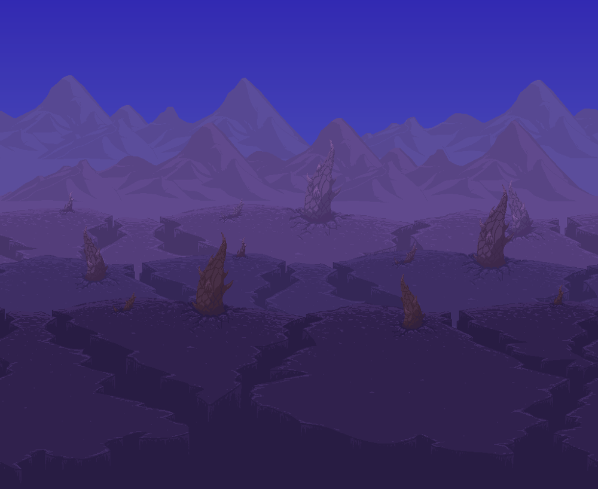
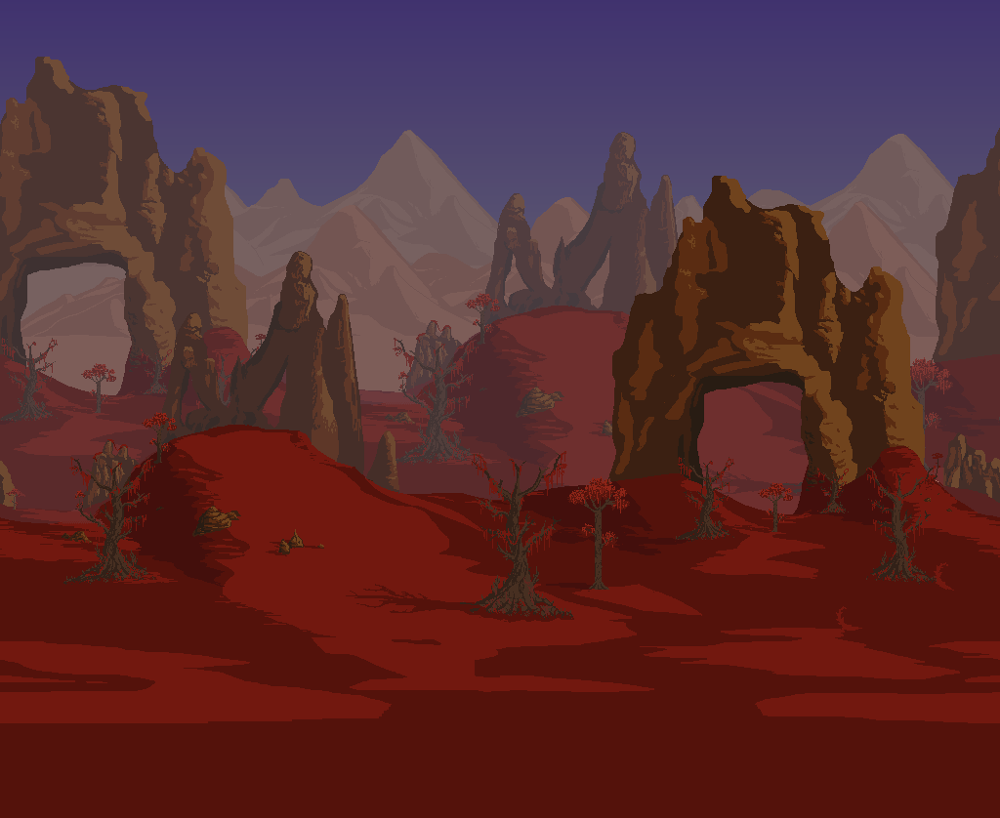
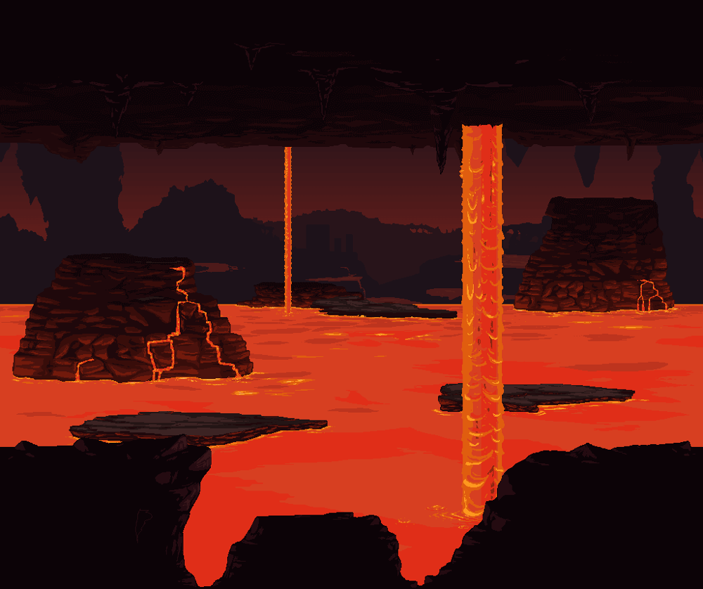

En Terraria para comenzar uno tiene que crear su propio personaje. Este personaje no solo podrá jugar en un mundo, sino que podrá jugar en cualquiera, permitiéndote buscar entre varios mundos los elementos que no encuentres en tu mundo original.
Además de lo estético, puedes modificar la dificultad de tu personaje:
- Viaje: No pierdes nada al morir y puedes duplicar objetos, pero solo puedes jugar en mundos de esta misma dificultad.
- Clásico: Al morir, solo pierdes parte de las monedas de tu inventario.
- Medio Núcleo: Pierdes todo lo que llevabas en el inventario.
- Extremo: Tu personaje no podrá revivir.

En Terraria, al crear un mundo puedes elegir su nombre, semilla, tamaño, dificultad y el tipo de infección.
Las dificultades son:
- Viaje
- Clásico
- Experto
- Maestro
Las infecciones son biomas que que se van propagando por el mundo y corropen todo a su paso siendo estas las infecciones:
-

- Corrupción: Sus enemigos son más resistentes y sus objetos se centran en el daño prolongado. 
- Carmesí: Sus enemigos hacen más daño y sus objetos se centran en ataques más agresivos.
Primeros pasos
Al iniciar, recolecta madera talando árboles y fabrica tus primeras herramientas. Construye un refugio básico para protegerte de los enemigos nocturnos. Busca minerales como hierro y plata para mejorar tu equipo.
El Guía

El primer NPC que encontrarás en Terraria es el Guía. Este personaje te dará consejos sobre cómo jugar y sugerencias sobre qué hacer con los materiales que obtengas. Además, si le das un objeto, te dirá para qué sirve y qué se puede fabricar con él.
Es un personaje clave para progresar, ya que su presencia es necesaria para invocar a la Muro Carnoso, el jefe que desbloquea el Modo Difícil. Si el Guía muere, regresará después de un tiempo siempre que haya una casa libre en tu mundo.
Primeros jefes
Los primeros jefes a enfrentar son:
- Ojo de Cthulhu:
.gif)
Aparece automáticamente si tienes al menos 200 de vida y ciertas condiciones se cumplen. También se puede invocar con una Suspicious Looking Eye durante la noche. Se encuentra en la superficie del mundo. - Devorador de Mundos

(Corrupción): Se encuentra en el bioma de Corrupción y se invoca destruyendo tres Orbes Sombríos o usando Carne Podrida. Es un jefe largo y segmentado que ataca en patrones de embestida. - Cerebro de Cthulhu
.gif)
(Carmesí): Se encuentra en el bioma Carmesí y se invoca destruyendo tres Corazones Carmesí o usando una Espina Sangrienta. Se rodea de criaturas pequeñas llamadas Servidores del Cerebro antes de su segunda fase.
El Infierno
El Infierno es la capa más profunda del mundo de Terraria. Aquí encontrarás peligrosas criaturas, como los Demonios y los Murciélagos de Lava, además de estructuras llamadas Casas del Inframundo, donde puedes encontrar cofres con poderosos objetos.
La Muro Carnoso, el jefe que desbloquea el Modo Difícil, se encuentra aquí y solo puede ser invocado lanzando una Muñeca Vudú Guía a la lava. Una vez que lo derrotes, el mundo cambiará drásticamente y se activarán nuevos desafíos.

Jefes del Modo Difícil
Los jefes que debes derrotar en esta fase incluyen:
- Los jefes mecánicos: El Destructor
 (invocado con un
Mecanismo de Gusano, aparece en la superficie durante la noche), Los Gemelos
(invocado con un
Mecanismo de Gusano, aparece en la superficie durante la noche), Los Gemelos  (invocados con Óptica Mecánica, combate
aéreo en la noche) y Skeletron Prime
(invocados con Óptica Mecánica, combate
aéreo en la noche) y Skeletron Prime  (invocado con un
Cráneo Mecánico, un jefe con múltiples brazos).
(invocado con un
Cráneo Mecánico, un jefe con múltiples brazos). - Plantera:
.gif) Se encuentra en la Selva subterránea y se
invoca destruyendo un Bulbo de Plantera, el cual aparece tras vencer a los jefes mecánicos.
Se encuentra en la Selva subterránea y se
invoca destruyendo un Bulbo de Plantera, el cual aparece tras vencer a los jefes mecánicos. - Gólem:
 Se encuentra dentro del Templo de la Selva y se
invoca con una Llave del Templo. Es un jefe con patrones de ataque predecibles pero de gran
resistencia.
Se encuentra dentro del Templo de la Selva y se
invoca con una Llave del Templo. Es un jefe con patrones de ataque predecibles pero de gran
resistencia.
Moon Lord

Es el jefe final del juego. Tras vencer al Cultista
Lunático en la Mazmorra y destruir los cuatro Pilares Lunares (Solar
en la Mazmorra y destruir los cuatro Pilares Lunares (Solar  , Vórtice
, Vórtice  , Nebular
, Nebular  y
Estelar
y
Estelar  ), se invocará automáticamente. Es crucial contar con armas de largo alcance y una arena de
combate bien diseñada.
), se invocará automáticamente. Es crucial contar con armas de largo alcance y una arena de
combate bien diseñada.